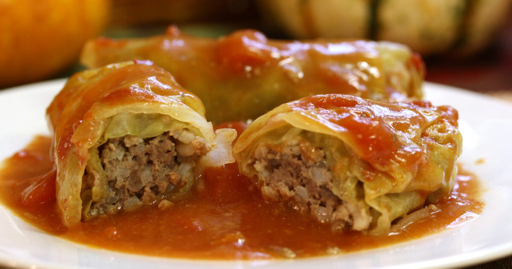

Sarma
This recipe for Serbian stuffed cabbage, or sarma, is a hearty dish that many Serbs serve every day but especially for special occasions like slavas and other holidays.
Recipes vary from cook to cook, but they all consist of a meat filling wrapped in cabbage and cooked over sauerkraut. This recipe includes a tomato sauce for more flavor.
Ingredients:
- 1 head cabbage
- 1 pound ground chuck
- 1/2 pound ground pork
- 1 cup raw rice, rinsed
- 1 package onion
- 1 jar sauerkraut
- 6 medium smoked ribs
- 1 can tomato sauce
- 1 can tomato soup
Preparation(short steps):
- Prepare the cabbage
- Make the filling
- Assemble the rolls
- Bake the sarma
- Let sit 20 to 30 minutes before serving
- Serve with the ribs

Back to main page